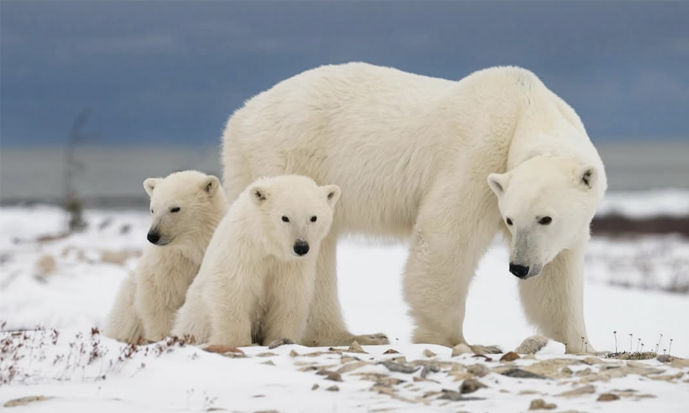
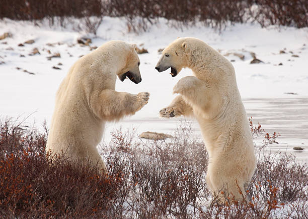
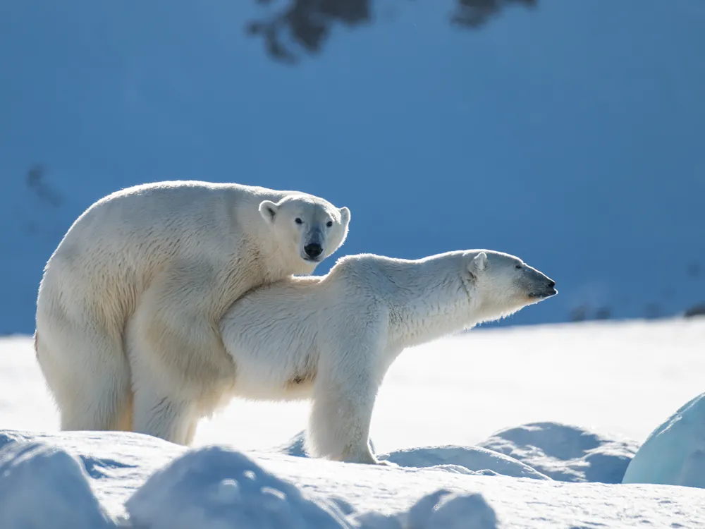

Polar bear is a large bear species native to arctic circle region. Polar is the largest land carnivore, with males reaching about 500Kg, But also considered as a marine mammal. It is the most carnivorous of all bears, with 100% of its diet consisting of meat, especially a special fat called blubber, found in marine mammals like seals, walruses and whales. So its a hypercarnivore, Also conisdered as a marine mammal as it lives mostly on sea ice in the arctic and depends on the sea for food, It can also travel long distances swimming over the water. Its favorite food is seals, especially ringed and bearded seals.
Sometimes Polar bears come to non icy lands like tundras, feeding on animals like caribou, But this is not efficient for them as there is no blubber. But increasingly due to melting of sea ice is increasing the pressure on polar bears to adapt to the rocky lands and also making them go after unconventional prey such as beluga whales, They can also hunt Walruses but they are huge with strong tusks so they go after younger ones, They are increasingly venturing into human settlements due to increasing pressure due to warming of ewarth causing human-wildlife conflict, Polar bears are considered to be extremely dangerous especially in winter due to their huge size and also actively considering humans as prey, which only few animals on earth do. An unarmed human has very less probability surviving a polar bear attack, hence it is advised to stay away and keeping distance from them.
They are found in the countries which have territories in the arctic circle, Canada, United States(Alaska), Norway, Russia, Denmark(Greenland). Though Canada has the largest population, with one third of the total population.
Polar Bear males are significantly larger than females, with almost twice the weight of females. Males fight for territory and mates, Females give birth to two or three cubs in the season. Polar Bears don't strictly hibernate as their body is well adapted to cold however they do have maternity dens where females with cubs stay for a while
Polar bear is highly adaped to the extreme cold climate of the arctic, They have Black skin with hollow hairs, So they appear white as the light reflects from the ice, sometime they appear yellow.




